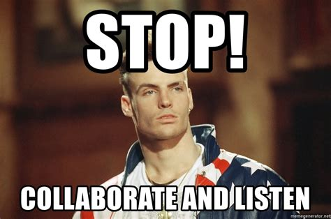
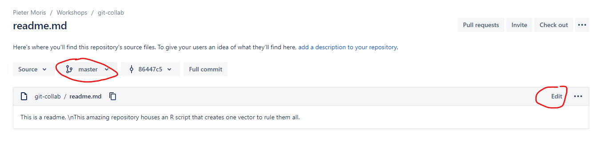
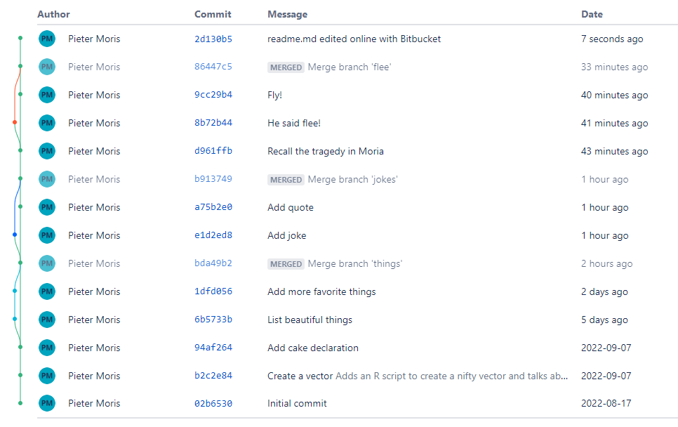

6. Collaboration#
This section will focus on additional aspects of collaboration, like using merge/pull requests to merge changes into a repository.
6.1. Merging into remote tracked branches#
So far, all the merges we have performed happened on our local machine. When we start dealing with remote repositories, things will get a bit more tricky.
Note
The most important thing to keep in mind is to be careful when dealing with any branch that is tracked remotely, because other contributors might be working on it. Consequently, the state of your local version of the branch and the remote one might not be the same.
To deal with this, you should you regularly update your local version of that branch via git fetch <branch> before you push your own set of changes tom the remote.
This is important in many different scenarios:
When working on a feature branch, pull in changes from
origin/master(ordev, depending on the branching strategy) regularly so that you can resolve conflicts yourself step by step, instead of leaving the (potentially sisyphean) conflict resolution step until the very end.Pulling in changes from
origin/masterinto your feature branch so that you can make use of a hotfix that you require yourself.Pulling in changes from the remote feature branch that you and someone else are working on concurrently. If you pull in the most recent commits on the remote every time before you push something to the remote yourself (resolving potential conflicts as you go), you will not run into conflicting git histories. I.e. that problem we encountered when we created a new repository and let Bitbucket initialize it with a README for us.
Similarly, using pull requests before merging into an important branch (like master/main or dev) can help you organise and streamline the changes of multiple authors.
A few useful commands to make use of during this section are:
git fetch --all=> fetch all information from the remotegit branch -av=> show remote branches
6.1.1. Fetching changes from master#
Consider a scenario where you are working on a repo with a shared master branch (or dev, again depending on the branching strategy), which gets updated regularly, and you want to work on some new functionality. You create a new feature branch, do a bit of work and end up with a bunch of new commits. How do you go about merging these back into master? Well, like we mentioned in the section above, it all comes down to first introducing the changes that might have happened on master into your own feature branch.
Instructions
Before tackling this exercise, first push all your changes to the remote via git push (or git push origin master if you did not setup the upstream tracking).
Create a new branch, make a few commits and push it to the remote.
On the git server, edit a few files on the
masterbranch via the web console (as if you were a collaborator introducing new commits). Do not fetch or pull these updates on your machine yet!On your local machine, merge your new branch into
master. Then, attempt to push it to the remote.When this fails, contemplate on your life choices.
Update your local remote tracking
origin/masterbranch with the changes on the remote one. I.e. fetch the remote changes to master and merge them into your local version.Either try merging your local master version with the remote one, or reset things back, pull, then merge your feature branch into master and then push it to the remote.
Make a new branch and create some files:
git switch -c turtles
mkdir -p tiny-turtle/medium-turtle/slightly-larger-turtle/big-turtle/huge-turtle/great-A-Tuin
echo "https://en.wikipedia.org/wiki/Turtles_all_the_way_down" > tiny-turtle/medium-turtle/slightly-larger-turtle/big-turtle/huge-turtle/great-A-Tuin/turtles-all-the-way-down.txt
Commit changes and push to the remote:
git add tiny-turtle/
git commit -m "Add turtles"
git push --set-upstream origin turtles
Now, on the remote server, make sure you are on the master branch and edit some files in the web console. This step represents the work that a collaborator might do on their machine and push to the remote.

In this example, it turns out that I messed up my original readme, so I’ll fix it and make a new commit on master. Afterwards, you can see that the remote history no longer matches your local one.

versus
$ git log --graph --pretty --oneline
* 12571eb (HEAD -> turtles) Add turtles
* 86447c5 (origin/master, master) Merge branch 'flee'
|\
| * 8b72b44 (flee) He said flee!
* | 9cc29b4 Fly!
|/
* d961ffb Recall the tragedy in Moria
* b913749 Merge branch 'jokes'
|\
| * e1d2ed8 (jokes) Add joke
* | a75b2e0 Add quote
|/
* bda49b2 Merge branch 'things'
|\
| * 1dfd056 (things) Add more favorite things
| * 6b5733b List beautiful things
|/
* 94af264 (borked/new) Add cake declaration
* b2c2e84 Create a vector
* 02b6530 Initial commit
So what happens when we try to merge turtles into master and push our changes to the remote is that we will get a warning, because master points to different commits locally (12571eb Add turtles) than it does on the remote (2d130b5 readme.md edited online with Bitbucket).
$ git switch master
Switched to branch 'master'
Your branch is up to date with 'origin/master'.
$ git merge turtles
Updating 86447c5..12571eb
Fast-forward
tiny-turtle/medium-turtle/slightly-larger-turtle/big-turtle/huge-turtle/great-A-Tuin/turtles-all-the-way-down.txt | 1 +
1 file changed, 1 insertion(+)
create mode 100644 tiny-turtle/medium-turtle/slightly-larger-turtle/big-turtle/huge-turtle/great-A-Tuin/turtles-all-the-way-down.txt
$ git push
Enter passphrase for key '/home/pmoris/.ssh/id_ed25519':
To bitbucket.org:pmoris/git-collab.git
! [rejected] master -> master (fetch first)
error: failed to push some refs to 'git@bitbucket.org:pmoris/git-collab.git'
hint: Updates were rejected because the remote contains work that you do
hint: not have locally. This is usually caused by another repository pushing
hint: to the same ref. You may want to first integrate the remote changes
hint: (e.g., 'git pull ...') before pushing again.
hint: See the 'Note about fast-forwards' in 'git push --help' for details.
Drat! If only we had first fetched the latest changes from the remote before merging our local branch into master…
To fix things, we could either undo the merge first via a git reset --hard - effective resetting things to the way they were before we merged turtles into master - or, if we follow the help message, we can try integrating the remote changes on top of our divergent history. We will demonstrate the latter option here.
First, use git fetch to read the remote changes. Effectively, all this does is inform your local repository about the status of the master branch on the remote repository. On your machine, this is reflected in the origin/master branch.
$ git log --graph --pretty --oneline --all
* 2d130b5 (origin/master) readme.md edited online with Bitbucket
| * 12571eb (HEAD -> master, turtles) Add turtles
|/
* 86447c5 Merge branch 'flee'
|\
| * 8b72b44 (flee) He said flee!
* | 9cc29b4 Fly!
|/
* d961ffb Recall the tragedy in Moria
* b913749 Merge branch 'jokes'
|\
| * e1d2ed8 (jokes) Add joke
* | a75b2e0 Add quote
|/
* bda49b2 Merge branch 'things'
|\
| * 1dfd056 (things) Add more favorite things
| * 6b5733b List beautiful things
|/
* 94af264 (borked/new) Add cake declaration
* b2c2e84 Create a vector
* 02b6530 Initial commit
We can clearly see that our version of master and the remote one disagree on what happened after commit 86447c5. They each have their own most recent child commit.
Like we mentioned, the cleanest way to resolve this, would probably be to perform a reset. However, depending on how much work you’ve done, this might be complex, especially if you already removed the feature branch for some reason. The alternative is to perform a merge, but that will make for a more messy history though. So what is the conclusion?
Fetch regularly from the remote!
Avoid merging directly into shared branches like
master(that is what pull requests are for after all)For shared feature branches, fetch regularly from the remote! (Yes, the same as the first bullet. It is important.)
I opted to create the merge for now, to showcase what it would look like. After pulling in the remote changes (represented by origin/master), we can simply try to merge them into our local version (master).
git switch master
git merge origin/master
GNU nano 4.8 /home/pmoris/git-collab/.git/MERGE_MSG Merge remote-tracking branch 'origin/master'
# Please enter a commit message to explain why this merge is necessary,
# especially if it merges an updated upstream into a topic branch.
#
# Lines starting with '#' will be ignored, and an empty message aborts
# the commit.
$ git merge origin/master
Merge made by the 'recursive' strategy.
readme.md | 3 ++-
1 file changed, 2 insertions(+), 1 deletion(-)
Fortunately, there were no conflicting changes; the local and remote history disagreed on which commits happened when, but the individual commits did not alter the same files.
After this merge, our history now makes sense again:
$ git log --graph --pretty --oneline --all
* 48def0c (HEAD -> master) Merge remote-tracking branch 'origin/master'
|\
| * 2d130b5 (origin/master) readme.md edited online with Bitbucket
* | 12571eb (turtles) Add turtles
|/
* 86447c5 Merge branch 'flee'
And we can safely push our changes to the remote:
$ git push
Enter passphrase for key '/home/pmoris/.ssh/id_ed25519':
Enumerating objects: 13, done.
Counting objects: 100% (13/13), done.
Delta compression using up to 8 threads
Compressing objects: 100% (6/6), done.
Writing objects: 100% (11/11), 896 bytes | 896.00 KiB/s, done.
Total 11 (delta 2), reused 0 (delta 0)
To bitbucket.org:pmoris/git-collab.git
2d130b5..48def0c master -> master
So why do we often talk about git pull when we didn’t use that command at all here? Well, git pull is actually a shortcut for git fetch && git merge and git pull. Just fetching will not modify your working directory, until you manually perform a merge. A pull would do both in one go.
Note
Keep in mind that the above scenario should (usually) be altered slightly in practice. Instead of manually merging feature branches into master, it is more prudent to use a pull request, which allows you to review changes before conducting the merge.
6.2. Creating pull requests#
In general, when collaborating with others, you should not be merging your changes into a master or development branch manually. Instead, depending on the branching strategy that was agreed upon, pull requests (or merge requests, depending on your perspective) should be used.
What they do is allow you to preview the changes that were made in a particular feature branch, compare them to a particular destination branch, let others review your code and have a discussion on whether the feature is complete or still needs additional work. Automated processes for testing your code could also be used here.
Afterwards, when all is agreed upon, the new changes can be merged, usually via the web console (although the commands could just as well be mimicked from the command line).
Instructions
Create a new feature branch, push it to the remote and make a pull request.
Review it on Bitbucket and merge it into the
masterbranch.If that was too easy, try taking it one step further. Ask one of your colleagues to add you as a collaborator in their git repo. Then clone it, make a new branch and create a pull request for it!
You’re on your own for this one. Good luck, champ ;)
6.3. Rebasing versus merging#
When working with pull requests, there is some debate as to whether you should merge the entire feature branch or rebase it. One more accurately reflects the true history of the project, whereas the other is thought to be a bit cleaner.
See also
A commit history with two divergent branches: master and things.#
Commit history after merging things into master: all commits are retained and a new merge commit is introduced.#
Commit history after rebasing things onto master: the original commits of things are moved (more accurately, deleted and recreated) as if they had directly occurred on the latest master commit.#
Related to this topic is the option of squashing commits before merging a feature branch. This essentially collapses all of the commits on your feature branch into a single commit, which is then merged. Useful for large projects and cleaning up your commit history, but again, it could obfuscate the true history.
6.4. Branching strategies#
Branching strategies deal with standardizing the methods used to interact with git in an attempt to make things run smoothly and efficient for a team. It does not only concern itself with how to merge changes of different users, but also with tracking specific releases of a software package.
A lot has been said about these different workflows already and opinions differ quite a bit depending on who you talk to. In my opinion, what is most important, especially in smaller teams and even more so in the scientific area than in software engineering, is that the workflow is understandable and is adhered to. I.e. it should not be too complex, but it should account for the most common potential points of failure.
In general, there are a few guiding principles that are shared among most strategies, and that is using feature branches for introducing new features and using pull requests before merging them into a longer-lived branch. They mostly differ in more subtle areas, like whether branches or tags should be used for releases, whether a separate master and dev branch are required or not, etc.
Note
Discussion time!